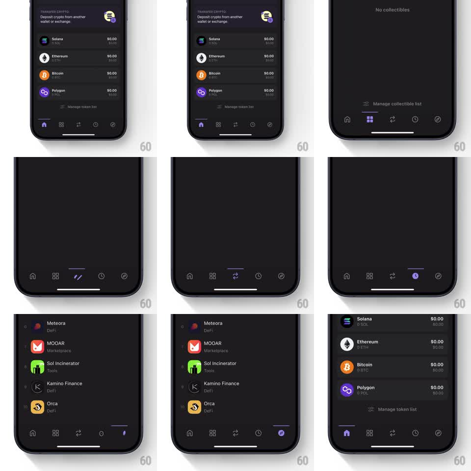

Media
Frame-by-frame

Rebuild this animation 1:1: Phantom wallet's bottom tab bar - switching tabs slides a small indicator line to the new tab and gives each icon its own playful micro-animation as it fills with the brand purple.

Rebuild this animation 1:1: Phantom wallet's bottom tab bar - switching tabs slides a small indicator line to the new tab and gives each icon its own playful micro-animation as it fills with the brand purple. ## Integration Integration: stack-agnostic spec - springs given as stiffness/damping, timed motions as duration + curve; map every value to your framework and animation library of choice. ## Scene Dark-themed wallet: token list content above a 5-tab bar (home, grid/collectibles, swap arrows, activity clock, explore compass). Active tab icon is filled purple with a short indicator line above the tab bar; inactive icons are gray outlines. ## Motion spec Pattern: tab switch with sliding indicator + per-icon micro-animation. - Indicator line (~24px) slides horizontally to the tapped tab (~250ms, ease-out), sitting just above the bar. - Tapped icon: fills purple (100ms color) plus its signature motion - home pops (scale 0.8 -> 1, spring ~350/20), swap arrows rotate 180deg, clock hand sweeps, compass needle spins (~300ms each). - Outgoing icon returns to gray outline with no motion. - Content area crossfades to the new tab's screen (~200ms). ## Calibration - Indicator travel speed is constant per distance - far tabs take proportionally longer. - Only the incoming icon animates; restraint elsewhere. ## Reduced motion Indicator jumps without slide; icons fill without motion; content crossfade only. ## Don't miss - Indicator lives ABOVE the icons (a line under the tab bar's top edge), not below them. - Each icon's micro-animation is distinct - do not apply one generic bounce to all.